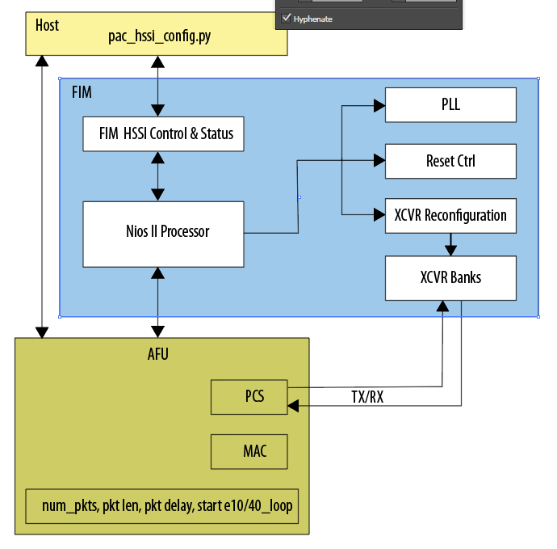

# pac_hssi_config #
## SYNOPSIS ## ```console pac_hssi_config.py [-h] subcommand [subarg] [bdf]
DESCRIPTION¶
The pac_hssi_config.py tool exercises the Ethernet 10 Gbps (10GbE) and 40GbE transceivers for designs using the
Intel® Programmable Acceleration Card (PAC) with Intel Arria® 10 GX FPGA. This tool does not support the
Intel Xeon® Processor with Integrated FPGA.

The two required arguments to the pac_hssi_config.py tool specify the subcommand and bus, device, and function (BDF)
for the PCIe device under test. You must provide the BDF parameter for systems with more than one PCIe card.
Note
If you do not provide the BDF when required, the command prints a list of valid BDFs for the system. You can also
determine the BDF using the lspci command.
For usage help, type the following at a command prompt:
pac_hssi_config.py [-h|--help]
To configure the network ports, send data, and read statistics, use the following form of the pac_hssi_config.py script:
pac_hssi_config.py subcommand [subarg] [bdf]
Only a subset of subcommand arguments support subarg.
Table 1. General Subcommands¶
| Subcommand | Subarg | Description |
|————|:——–:| ————|
| stat | N/A | Prints high speed serial interface (HSSI) controller statistics. |
| eeprom | N/A | Reads the 128-bit unique board ID, MAC address, and board-specific IDs from EEPROM. |
Table 2. 10/40 GbE Traffic Generation Subcommands¶
| Subcommand | Subarg | Description |
|————|:——–:| ————|
| e10init and e40init | N/A | Initializes HSSI PHY to 10GbE or 40GbE mode. Clears statistics and enable internal HSSI transceiver loopback. |
| e10loop and e40loop | On/Off | Turns on or off internal HSSI transceiver loopback. |
| e10reset and e40reset | On/Off | Asserts or deasserts AFU reset. Clears packet statistics and disables internal HSSI transceiver loopback. |
| e10send and e40send | N/A | Sends 1,000,000 1500-byte packets. For 10GbE sends packets on all four ports. 40GbE has a single port. |
| e10stat and e40stat | N/A | Prints packet statistics. |
| e10statclr and e40statclr | N/A | Clears packet statistics. Use this command after switching loopback modes to clear any transient statistics accumulated during the mode switch. |
The transceiver equalization eqwrite and eqread subcommands write and read transceiver equalization settings.
These subcommands require you to specify the transceiver channel, the equalization setting, and the value (for writes).
Use the following form for the eqwrite command:
pac_hssi_config.py eqwrite [transceiver channel number] [equalization setting] [equalization value] [bdf]
Use the following form for the eqreadcommand:
pac_hssi_config.py eqread [transceiver channel number] [equalization setting] [bdf]
Table 3. Transceiver Equalization Subcommands¶
| Subcommand | Channel Number | Equalization Setting | Value |
|————|:——–:| ————|————– |
| eqwrite | 0-3 | 0 = Continuous time-linear equalization (CTLE)
1 = Variable gain amplifier (VGA)
2 = DCGAIN
3 = Pre-emphasis first post-tap
4 = Pre-emphasis second post-tap
5 = Pre-emphasis first pre-tap
6 = Pre-emphasis second pre-tap
7 = Differential output voltage (VOD) | Specifies the value for the specified equalization setting. |
| eqread | 0-3 | 0 = Continuous time-linear equalization (CTLE)
1 = Variable gain amplifier (VGA)
2 = DCGAIN
3 = Pre-emphasis first post-tap
4 = Pre-emphasis second post-tap
5 = Pre-emphasis first pre-tap
6 = Pre-emphasis second pre-tap
7 = Differential output voltage (VOD) | N/A |
For more information about reconfiguring transceiver analog parameter settings In Arria® 10 devices, refer to “Changing PMA Analog Parameters” in the Intel® Arria® 10 Transceiver PHY User Guide.
Revision History¶
| Date | Intel Acceleration Stack Version | Changes Made |
|:——|—————————-|:————–|
|2018.05.21| DCP 1.1 Beta (works with Quartus Prime Pro 17.1.1) | Added the following subcommands to the pac_hssi_config.py tool:
eeprom
eqwrite
eqread
Added links to related information.
Fixed typos. |
|2018.04.13| DCP 1.1 Alpha (works with Quartus Prime Pro 17.1.1) | Initial release. |